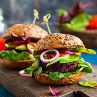

Recetas
Recetas
 Pollo
Pollo
 Pescado
Pescado
 Atun
Atun
 Veganas
Veganas
 Vegetarianas
Vegetarianas
 Quinoa
Quinoa

Hamburguesas de quinoa y frijoles negros
Hamburguesas veganas de quinoa y frijoles negros, perfectas para acompañar con ensaladas o como relleno de un pan integral.
Dificultad
Dificil

Personas
4

TOTAL
45MIN
Ingredientes:
- 1 taza de quinoa cocida
- 1 taza de frijoles negros cocidos
- 1/4 de taza de pan rallado
- 1/4 de taza de cebolla picada
- 1 cucharadita de comino
- 1 cucharadita de pimentón ahumado
- 1 cucharada de salsa de soja
- 2 cucharadas de aceite de oliva
- Sal y pimienta al gusto
Información nutricional (aproximada por porción):
- Calorías: 350 kcal
- Proteínas: 15 g
- Grasas: 12 g
- Carbohidratos: 40 g
- Fibra: 9 g
A cocinar:
- 1. En un tazón grande, mezcla la quinoa cocida, los frijoles negros (previamente triturados con un tenedor o procesador), pan rallado, cebolla, comino, pimentón y salsa de soja.
- 2. Forma 4 hamburguesas con la mezcla.
- 3. Calienta el aceite en una sartén y cocina las hamburguesas durante 4-5 minutos por cada lado, hasta que estén doradas.
- 4. Sirve las hamburguesas en panes integrales con los acompañamientos que prefieras (aguacate, tomate, etc.).